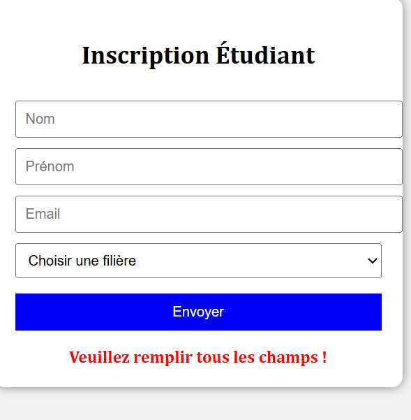

Mes réalisations

formulaire d'inscription d'un etudiant
Ce projet consiste en la creation d'un formulaire web, permettant a l'etudiant de s'inscrire en ligne. HTML5 structure la page et les champs du formulaire,CSS s'occupe du style et de la mise en page,et javascript permet l'envoie des donnees et la vallidation des champs saisis
Technologies :HTML,CSS,JavaScript
Voir le projet GitHub
Configuration routeurs et switches
Configuration de routeurs et switches dans un reseau informatique. Mise en place des adresses IP, routage, et gestion des connexions entre les equipements reseau
Technologies : Cisco,Packet Tracer
Voir le projet GitHub
programmation des calculs
Ce projet consiste en la creation d'un programme permettant d'effectuer les calculs numeriques.Mise en place des operations mathematiques de base et avancee s avec affichage des resultats
Technologies : language C
Voir le projet GitHub